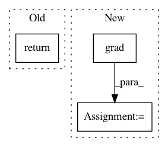

3d2b153db38829f27aed196ec86f9983e1747d7a,pymc3/variational/operators.py,KSDObjective,__call__,#KSDObjective#Any#,36
Before Change
updates.update(obj_optimizer([d_obj_padams], self.obj_params))
def __call__(self, z):
return self.op.apply(self.tf)
class KSD(Operator):
R
After Change
params = self.test_params + kwargs["more_tf_params"]
grad *= -1
grad = theano.clone(grad, {op.input_matrix: z})
grad = tt.grad(None, params, known_grads={z: grad})
return grad
class KSD(Operator):
In pattern: SUPERPATTERN
Frequency: 3
Non-data size: 3
Instances
Project Name: pymc-devs/pymc3
Commit Name: 3d2b153db38829f27aed196ec86f9983e1747d7a
Time: 2017-05-22
Author: maxim.v.kochurov@gmail.com
File Name: pymc3/variational/operators.py
Class Name: KSDObjective
Method Name: __call__
Project Name: pymanopt/pymanopt
Commit Name: eac38dbe9694bdfa6c2050528d8cc6a64747e933
Time: 2020-02-01
Author: niklas.koep@gmail.com
File Name: pymanopt/autodiff/backends/_autograd.py
Class Name: _AutogradBackend
Method Name: compute_gradient
Project Name: pymc-devs/pymc3
Commit Name: bb276a7c7f9715cda2f4fa376ebcb22fb5ee29e3
Time: 2017-06-28
Author: maxim.v.kochurov@gmail.com
File Name: pymc3/variational/stein.py
Class Name: Stein
Method Name: dlogp